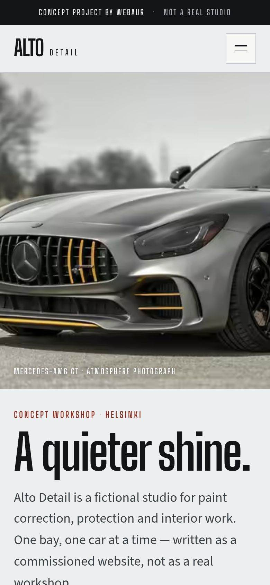
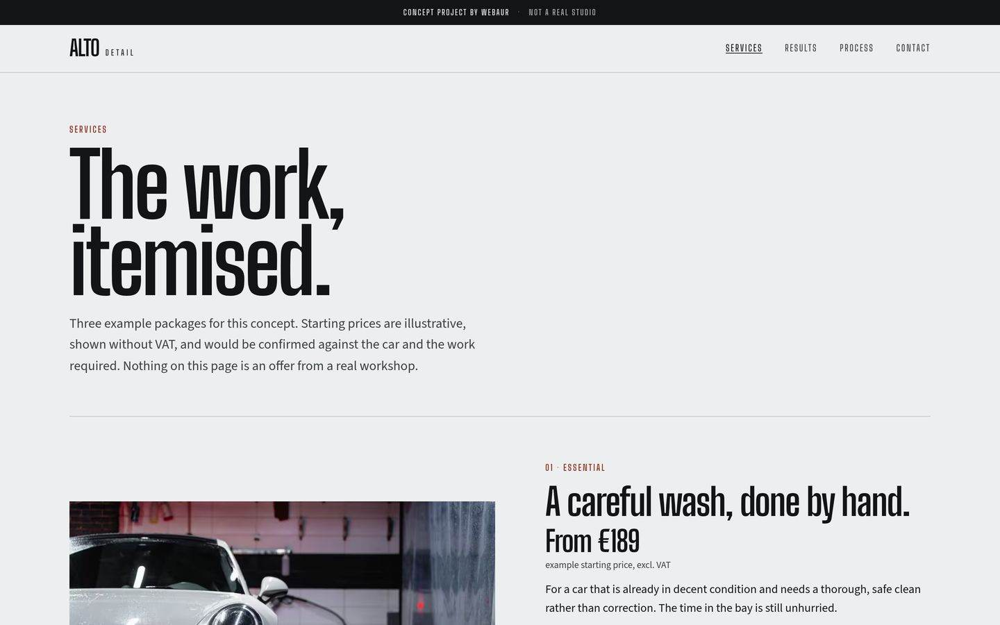
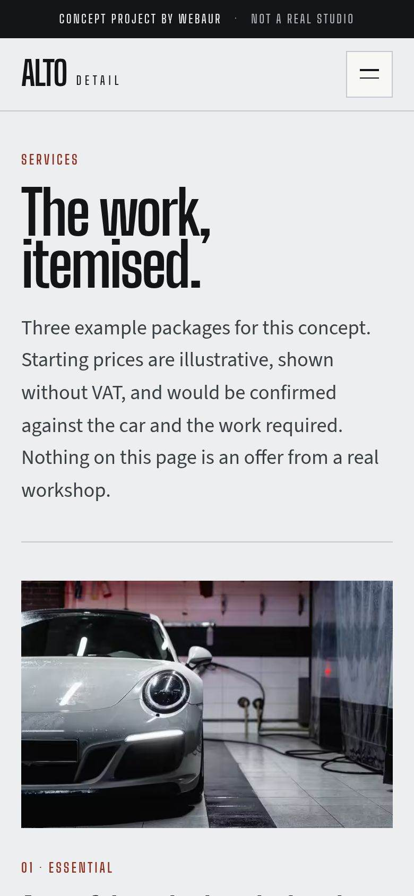
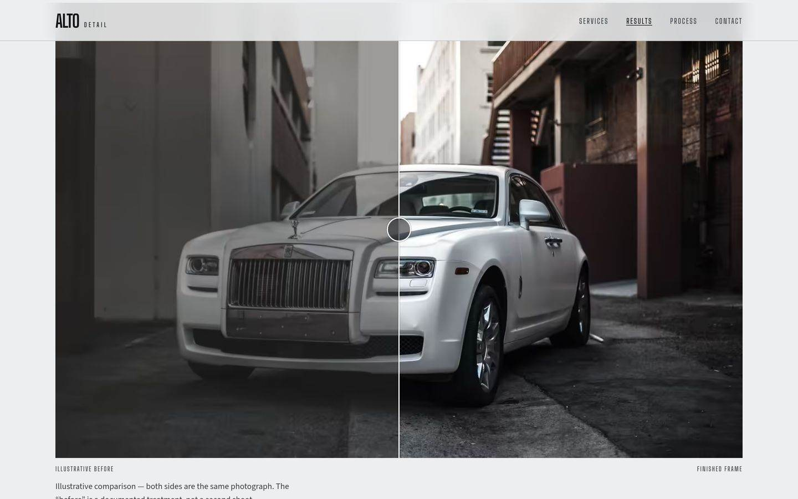
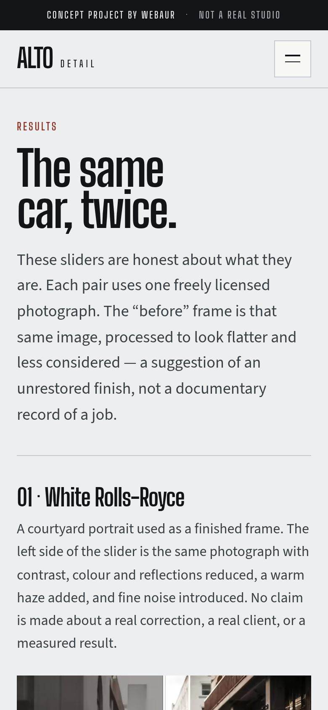
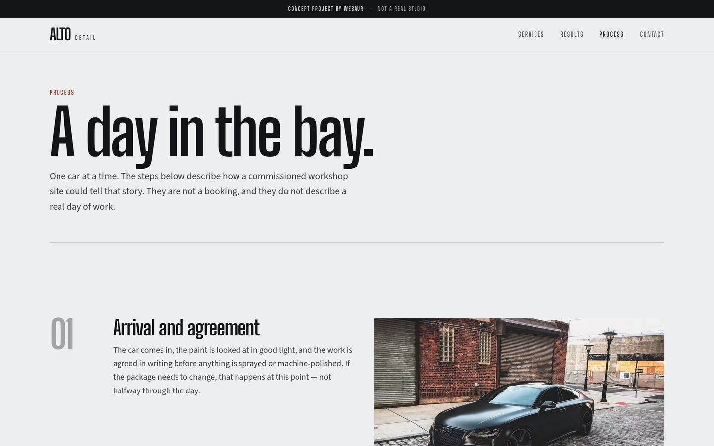
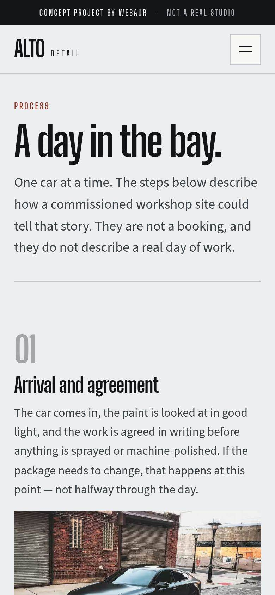
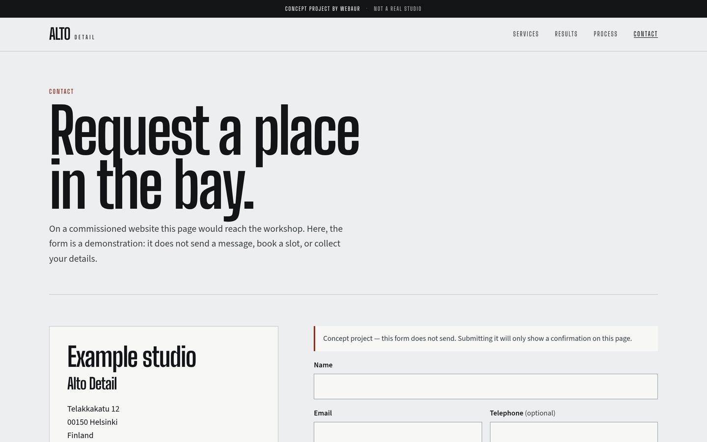
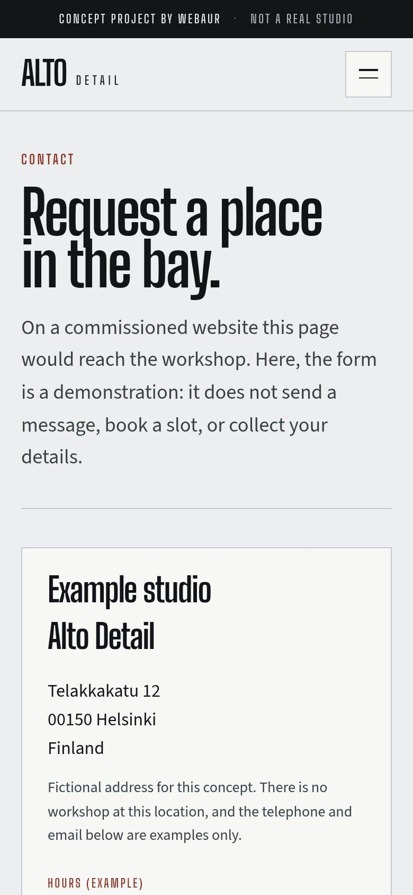

Etusivu
A quieter shine.
Showroom-harmaa avaus, matala auto ja lyhyt rivi. Ensimmäinen vaikutelma on halli, ei esitehila.
Työt / Alto Detail
KonseptiprojektiShowroom-henkinen konsepti detailing-studiolle: harmaa, oksidinpunainen ja autot kuvattuna esineinä hallissa. Viisi sivua, joukossa tulossivu ennen–jälkeen-liukusäätimineen.

Rakentaa kokonainen detailing-sivusto omalla brändillä, hinnoitelluilla paketeilla, visuaalisella vertailulla ja yhteydenottopolulla, joka ei keksi tuloksia.
Näyttää, miten WEBAUR käsittelisi teknistä palvelubrändiä: valokuvat, typografia ja toiminto (liukusäädin), joka tekee oikeasti jotain.
Detailing-studio, joka haluaa näyttää yhtä täsmälliseltä kuin työ — lähempänä showroomia kuin äänekästä autohuoltomainosta.
Tämä on konseptiprojekti. Se ei ole maksavan asiakkaan sivusto, eikä se keksi asiakkaita, arvosteluja tai tuloksia.
Brändi-identiteetti
Big Shoulders Display / Text
A quieter shine.
Shown here in a system stand-in. The live demo loads Big Shoulders Display / Text.
Source Sans 3
Essential, Signature and Atelier — packages stated in the open.
Shown here in a system stand-in. The live demo loads Source Sans 3.
ALTO DETAIL
Elokuvallinen ja teollinen. Big Shoulders automaiselle äänelle, Source Sans 3 lukutekstille, showroom-harmaa ja oksidinpunainen aksentti.
Sivu sivulta
Etusivu
Showroom-harmaa avaus, matala auto ja lyhyt rivi. Ensimmäinen vaikutelma on halli, ei esitehila.
Palvelut
Kolme pakettia esimerkkihinnoin alkaen 189 €. Valikoima on luettavissa heti, ilman että hinta piilotetaan tarjouspyynnön taakse.




Tulokset
Ennen–jälkeen-liukusäätimet ovat sivun päätoiminto. Ennen-kuvat ovat saman valokuvan käsiteltyjä versioita — eivät toista autoa eivätkä dokumentoitua asiakastyötä. Sivu sanoo tämän suoraan.
Prosessi
Työ käydään läpi päivänä hallissa, jotta palvelu tuntuu vaiheilta eikä pelkiltä iskusanoilta.




Yhteys
Pyyntölomake ja yhteystiedot, merkitty konseptiksi. Sivu ei keksi jonotuslistaa tai valmista varausta.
Liukusäätimet vertaavat saman valokuvan kahta käsittelyä. Ne ovat havainnollistavia, eivät todiste maksavasta työstä.
Big Shoulders on leveä ja mekaaninen; Source Sans 3 pitää paketit ja prosessitekstit luettavina. Oksidinpunaista käytetään säästeliäästi, kuin maalattua jarrusatulaa.
Liukusäädin vakuuttaa vain, jos kuvateksti on totta. Molemmat puolet ovat sama valokuva; “ennen” on käsitelty kehys, ja sivu sanoo sen.
Essential, Signature ja Atelier on listattu esimerkkiluvuin, jotta kävijä voi arvioida tarjonnan ilman porttia.
ALOITA PROJEKTI
Kerro yrityksestäsi ja siitä, mitä haluaisit parantaa. Me hoidamme loput.